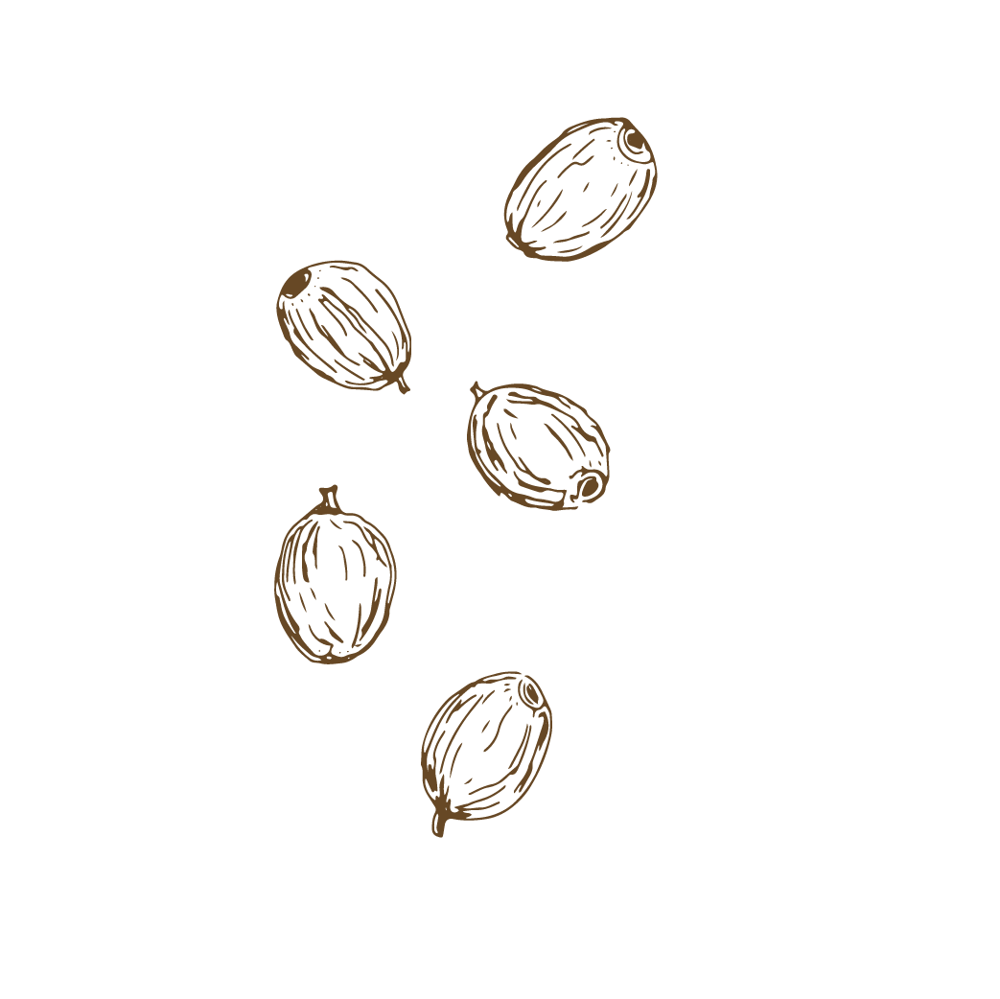

HARVESTING THE BERRIES
Harvesting the berries which is done either by hand or machine depending on
how large the farm is. Next comes cleaning, sorting, and selecting the berries. Removing the hard stems and
discarding underripe or rotten berries is part of this step in the process.